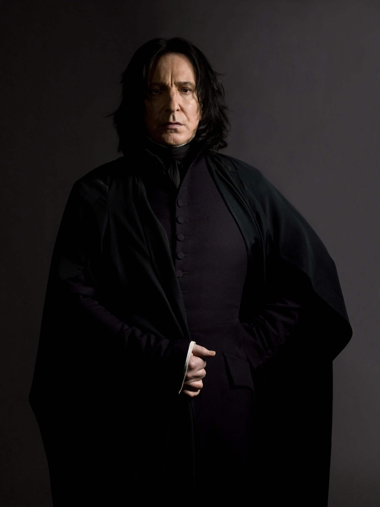

House Slytherin
House Slytherin, represented by the colors green and silver, with a snake mascot. This house is often confused for being an “Evil” house, but that is not quite true. Founded by Salazar Slytherin, often considered an outcast amongst the founders, but no less powerful or skilled than the other three. Slytherin is a house of ambition; the Sorting Hat sends Slytherin the most cunning and ambitious students. Like House Gryffindor, Slytherin is known for its Quidditch team. The dorm rooms are located in the dungeon.
People of house slytherin
House Slytherin has had a lot of talented wizards through its years. One such wizard is the ghost of Slytherin Bloody Baron. It is currently headed by Professor Snape, who is widely considered the best potions master in the world. In the past, we have had many brilliant people pass through, such as Tom Marvolo Riddle, and even the great wizard Merlin himself. This is the house for those who are ambitious, and that has led to Slytherin having an unusually high concentration of talented wizards. If you believe in seeking power and have great ambition, House Slytherin is right for you.
